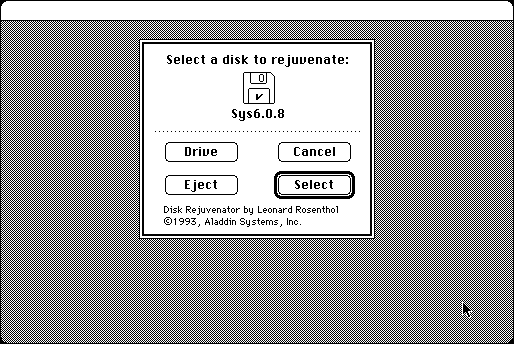

Download
disk_rejuvenator_10.zip (16K) Disk Rejuvenator 1.0 repackaged into a zipped hfs disk image and checksum file. The disk image can be mounted with Mini vMac.
disk_rejuvenator_10.bin (33K) Disk Rejuvenator 1.0 in the original format.
copyright: Aladdin Systems
mod date: Feb 11, 1993
license: free for non-commercial use
last known url
(gone)
Fixes some kinds of corruption of the “FinderInfo for the root of the disk”, where “hard disks would become inaccessible from the standard 'Open' dialogs,” or “custom icons would disappear”. “Requires System 6.0.4 or later”. By Leonard Rosenthol.

If you find these downloads useful, please consider helping the Gryphel Project, which hosts them.
Here are the md5 checksums for the downloads, signed with Gryphel Key 5:
--------- GRY SIGNED TEXT --------- a3f9c19628bce3095ce0fc9f20ca2108 disk_rejuvenator_10.zip c5e42e9b966b5b855aea48288c0437e3 disk_rejuvenator_10.bin ------- BEGIN GRY SIGNATURE ------- Gry/4Xa8CFcUzxdN/DEe4jxG3p5QT9ZaPN5qi1CY4KooS/ciwSpsRT2HJeONJSkv Chokhr4Xbm7y5N1dYcvRupFyEa69585px7YWOiHMWi2GK2pV/mrOYdS4yI8tLiEJ 3KmgSOAysJy0LZRH3cAiUZF7lZIwNjsbVwyzz+SR8vNc3ZwtRB2Hsw3FUbCJILXa -------- END GRY SIGNATURE --------